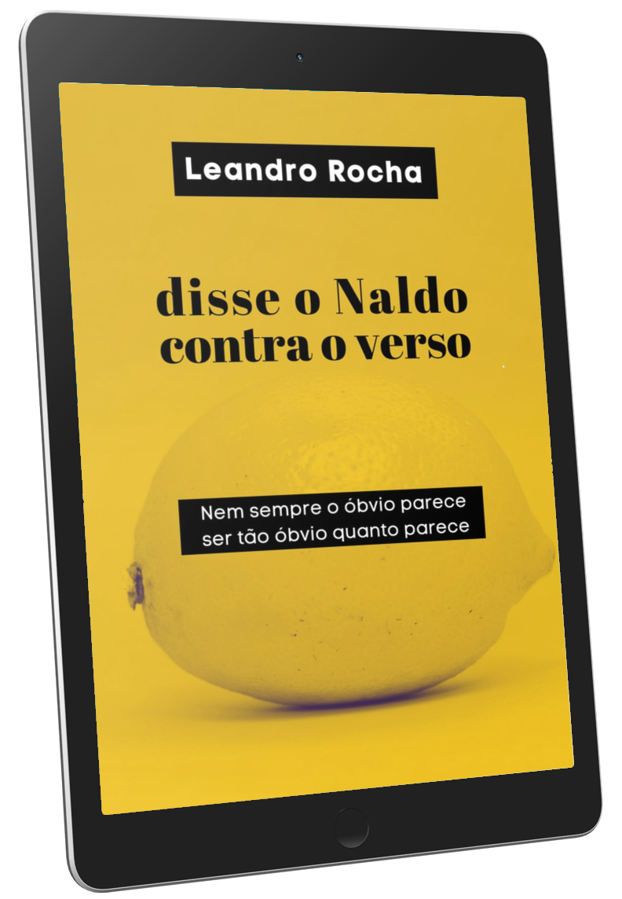
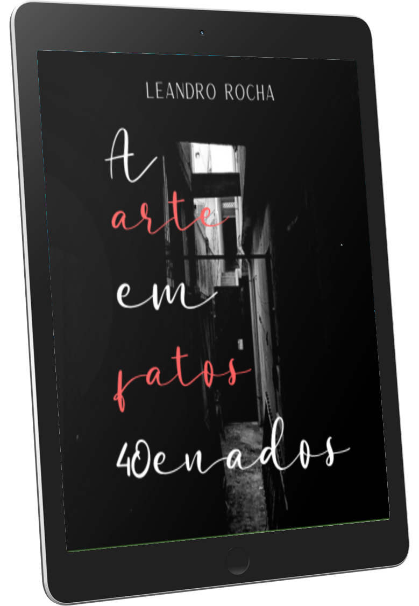
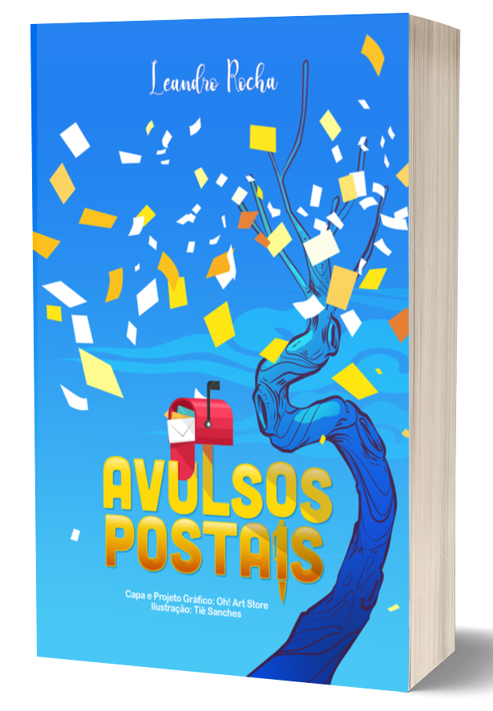

Leandro Rocha é paulistano, pai da Aurora, caçula de três irmãos, canhoto, caçador de narrativas, vendedor de histórias e graduado em Letras. Defensor da Palavra, que sente os detalhes por aí afora. Criador ativo que propaga comunicação e sensibilidade em seus passos e rastros.
Pílulas Vitais: para repor seu vigor
Diariamente, a vitalidade humana é saqueada.
Ora por nós mesmos, ora por permitirmos os furtos.
O fato é que ela precisa, constantemente, ser renovada.
Você vai decidir como é que vai suprir tal necessidade, mas uma coisa é certa:
vital é transportar Pílulas Vitais por onde você for!
Mergulhe nas poesias para o autoconhecimento.
Disse o Naldo contra o verso
Nem sempre o óbvio parece ser tão óbvio quanto parece.
Será que realmente é tão óbvio uma descrição a respeito de algo?
A partir do lado que você está vendo alguma coisa, aquela é a sua visão, mas do outro lado, a visão
alheia é outra revelação.
Tudo depende do seu ponto de vista.
Cabe apenas uma definição segurar o poder gigante de algo que não é simples descrever?
O que não cabe em si, transborda por aí.
Neste livro, você será conduzido para uma contemplação mor sobre a poesia que envolve o Ser poeta.
Trilhando um caminho nada óbvio.
A arte em fatos 40tenados
Há quem diga muita coisa sobre "legado". Eu acredito que legado é construído todo
diae, não, postumamente.
Durante o período mais sombrio que vivemos no nosso atual
mundo contemporâneo, imediatista e volátil, tive o privilégio de estar em minha casa quarentenando.
Deste momento, surgiu este trabalho: A arte em fatos quarentenados.
Onde você terá acesso a 40 poesias deste turbilhão que vivemos + 40 fotografias do meu lar
(atividade de olhar para o mesmo local e ressignificar o seu valor). Intimista e sensível, A arte
em fatos quarentenados certamente é uma obra que irá compor meu legado nesta Terra. E
recordar é um ato de resistir e lutar para que, no amanhã, as coisas não aconteçam da mesma forma
que no passado.
As fotografias foram produzidas em preto e branco em homenagem a todas as pessoas que, infelizmente,
tiveram suas vidas ceifadas.
Avulsos Postais
O Avulsos Postais é o meu primeiro livro lançado. É dividido em cinco bloco de poesias e contém ilustrações da Tiê Sanches. A capa foi feita pelo grafiteiro Rodolfo Sales. Foi uma grande realização pessoal e fico feliz em lançar para o mundo um pedaço de mim. Agora, quero que ele alcance outros corações, pois escrever é meu afeto porque viver me afeta.